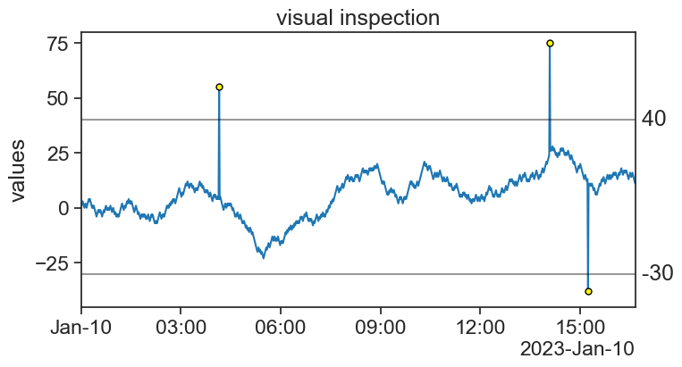
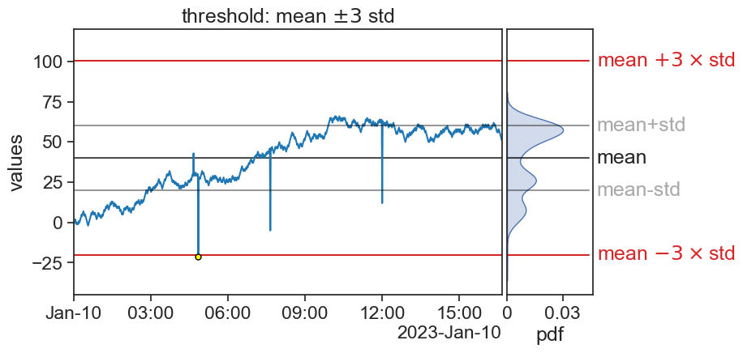

16 outlier identification
16.1 visual inspection
I produced a stationary signal and added to it a few ouliers. Can you tell where just by looking at the graph? 
The easiest way of identifying the outliers is:
- First plot the time series.
- Choose upper and lower boundaries. Whatever falls outside these boundaries is an outlier.
Easy.

If all you have is this one time series, you’re done, congratulations. However, it is often the case that one has very long time series, or a great number of time series to analyze. In this case it is impractical to use the visual inspection method. We would like to devise an algorithm to automate this task.
16.2 Z-score
The Z-score is the distance, in units of 1 standard deviation, of a point in the series with respect to the mean:
z = \frac{x-\mu}{\sigma},
where
- x= data point,
- \mu= time series mean
- \sigma= time series standard deviation.
A common choice is to consider an outlier a point whose Z-score is greater that 3, in absolute value. In other words: If a point is more than 3 standard deviations away form the mean, then we call it an outlier.

You can now use this algorithm to any number of time series, let the computer do the hard work.
Of course, there is nothing sacred about the number 3. You can choose any Z-score you want to perform an analysis on your own data, depending on your needs.
16.2.1 ATTENTION!
For data that is gaussianly distributed, we expect that 99.73% of data to fall within 3 standard deviations from the mean. In other words, 0.27% of points would be considered as outliers according to the Z-score method.
Source: Wikimedia Commons
{kind=link}
Assume you have a time series gaussianly distributed, with 10k measurements. We would expect to find about 27 outliers in this time series.
So what is the problem?!
The thing is, outliers are not supposed to be only data points far from the other points. That’s not enough. A better way of understanding outliers is to imagine that our expected measurements are sampled from a given distribution, and every now an then we have measurements that are sampled from another distribution.

We should have this in mind always. We wouldn’t want to single out good data as something weird. Our true task is to identify which points in our time series were sampled from a different distribution. This can be a very challenging task.
16.3 IQR
Another super common criterion for identifying outliers is the IQR, or InterQuartile Range.
Take a look at the statistics below of the time series we have been working with so far. The IQR is the distance between the first quartile (Q1) and the third quartile (Q3), where exactly 50% of the data is.
The algorithm here is to determine two thresholds, whose distance is 1.5 times the IQR from Q1 and Q3. Whatever falls outside these two thresholds is an outlier.

We are used to see this in box plots:
Source: McDonald (2022)
Again, the distance 1.5 is not sacred, it’s only the most common. You might want to choose other values depending on your needs. Let’s now apply the IQR method to our time series.
It works pretty well! Notice that now we have an additional outlier (a bit before 06:00). What do we do with that?
16.4 non-stationary time series
I have produced a new time series, one that on average goes up with time. Can you point in the graph where are the outliers?
Now, see what happens when we apply the previous two methods to this time series.
Z-score

IQR

What happened? Do you have ideas how to solve this?